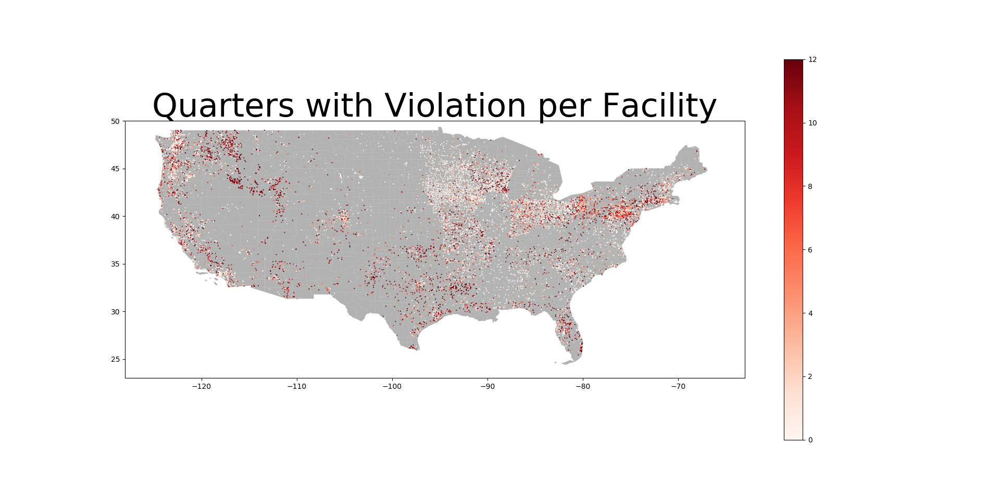
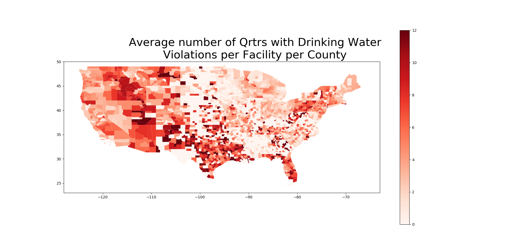

GIS is a broad topic with much to cover rendering the task of writing a single, comprehensive article on the subject impossible. Instead, the goal of this example is to instruct the reader on the specific parts of GIS which were used in our research - specifically mapping points onto maps using latitude and longitude.
Our specific example comes from our investigation into the frequency of violations of EPA statutes at the individual facility level, and seeing if facilities tend to have more or less violations based on their geographical location. The dataset was obtained from the EPA, and information on collecting the data from the website can be found in our other tutorial on web scraping, and we measure the number of violations using the number of quarters with violations in the last three years, meaning that each facility will be assigned an integer value in a range of 1 to 12. The results are pictured here for reference.
We will then also discuss our analysis at the county level which involved aggregating the data for each county from the data at the individual facility level. From this kind of data, there are many kinds of maps that can be obtained, for example one could find the average number of quarters with violations per facility per county, or just the total number of quarters with violations in each county - we will discuss more in detail, but here to give you an idea of the kind of maps we're talking about, is the map for violations per facility per county, that is to say that each color represents the average number of quarters with violations the facilities have in that county.
Before beginning, there are a few basic things that one needs to obtain.